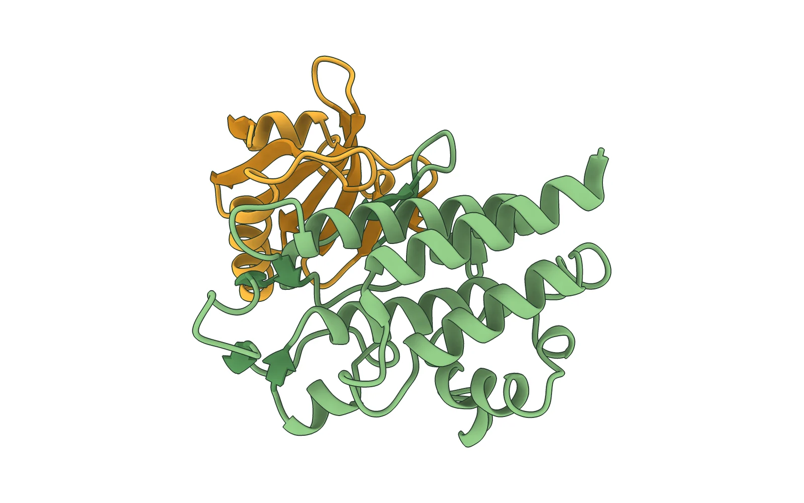

AlphaFold modelMSc thesis · GMI → BOKU · 2025–2026
Decoding ATG8ylation under cell wall damage
When the cell wall fails, the vacuole risks collapsing. Plants protect it by attaching ATG8 directly to the vacuolar membrane, a non-canonical form of autophagy. My MSc thesis asked what switches this on: I characterised candidate regulators in transgenic Arabidopsis lines by confocal and electron microscopy. Results are unpublished, so details are available on request.
Along the way I covered the whole loop at the bench, from building constructs to imaging root tips. Funded by the Austrian Science Fund (FWF) and carried out at GMI and BOKU.
- CloneGreenGate, SnapGene
- VerifyDNA extraction, sequencing
- TransformE. coli → Agrobacterium
- Floral dipTransgenic lines
- ImageConfocal, root tips
- MeasureHuygens, FIJI
Thesis defended, BOKU 2026